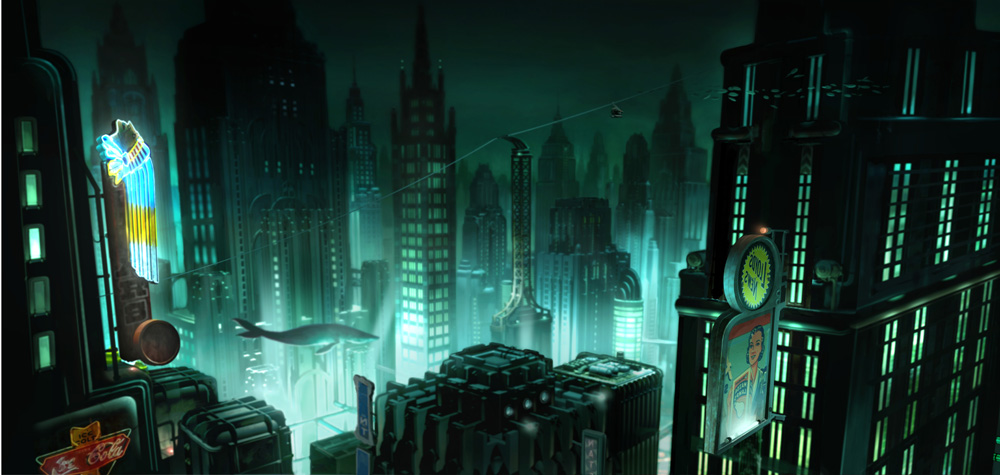

La historia de Rapture
La historia de BioShock se desarrolla en Rapture, una ciudad submarina creada para que las personas pudieran vivir lejos de las restricciones de la sociedad. Con el lema "No Gods. No Kings. Only Man." (En español: "Ni dioses, ni reyes. Solo el hombre")

Sin embargo, la ciudad termina convirtiéndose en un lugar peligroso debido a los conflictos entre sus habitantes y al uso de una sustancia llamada ADAM, que permite obtener habilidades especiales.
Características principales
- Combates en primera persona.
- Exploración de escenarios submarinos.
- Uso de armas y poderes especiales.
- Una historia llena de misterios.
- Decisiones y elementos de terror.
Personajes principales
Jack: es el protagonista y el personaje que controla el jugador durante la aventura.
Andrew Ryan: es el fundador de Rapture y una figura fundamental para enterder la historia de la ciudad.
Atlas: es una voz que se comunica con el protagonista y lo orienta durante todo el recorrido.